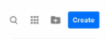
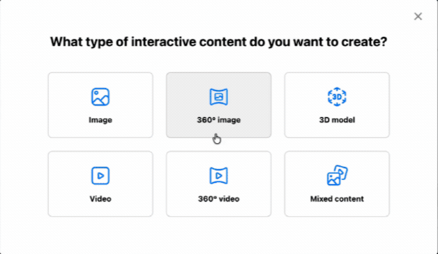
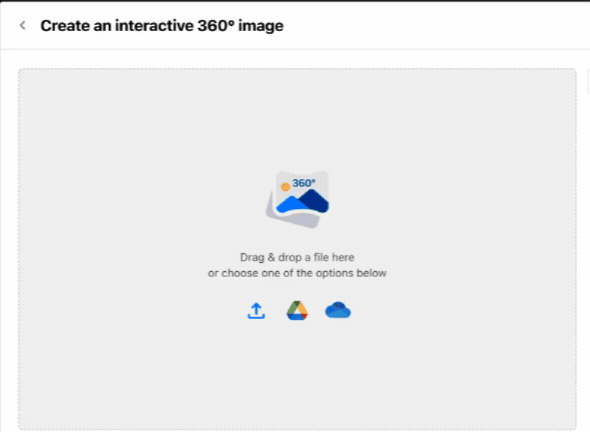
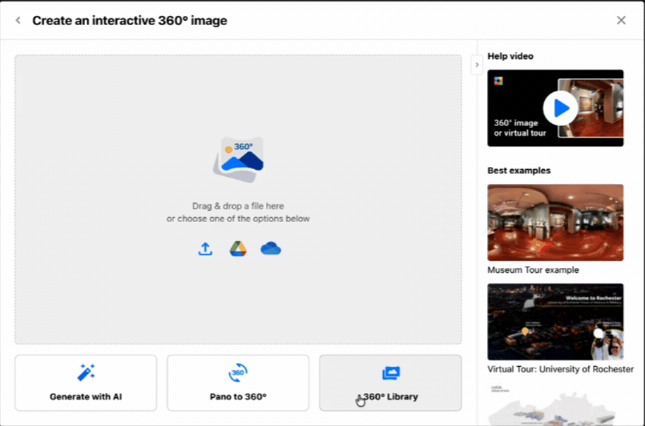
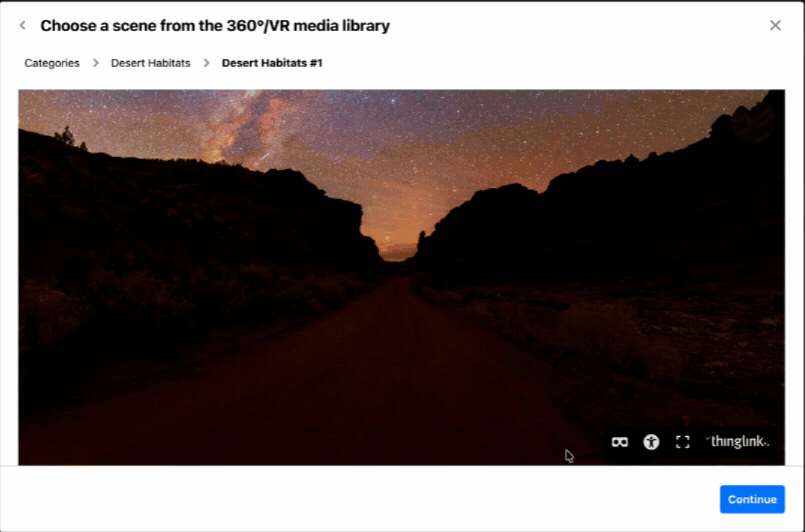
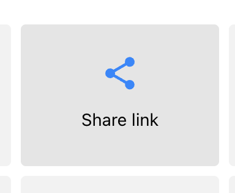

Show a place in 360°
Make one scene that teaches someone about a real location. Add at least six tags and use at least two kinds of content across them.
1. Get your 360° image
Open ThingLink and sign in with your school account. Choose Camera or Library below.
Class 360° photos: ask your teacher for the link
Open the folder with your school account. Right-click your photo and choose Download. Find the JPG in Downloads and use it in the ThingLink upload steps below. If your photo is missing or access is blocked, ask your teacher.
School camera: Choose a room, hallway, or shared space your teacher approves. Plan what to capture and explain. If your teacher uses the camera plan, complete it before asking to leave. Wait for approval and a return time. Capture only the approved space, then return the camera and transfer the photo with your teacher.
Before capturing: Keep faces, student names, private screens, schedules, and door codes out of the photo. A 360 camera sees behind you, too.
Upload your photo
- Click Create.

- Choose 360° image, not Image or 360° video.

- Click the upload icon (the upward arrow). Choose your original 360° JPEG from your device.

- When the upload finishes, follow Continue if shown. Check that you can look around the image.
Upload the original photo, not a screenshot of it.
Example: Mrs. Arceneaux’s classroom
Look around and open the tags. If the viewer does not load, open the link or use the kitchen example below.
Another example: The Bear Kitchen
Camera example: The Bear Kitchen
Notice how tags explain details in a photographed space.
Choose a photo library
Use these photos to research another place. For the photo you took at school, follow the class-photo instructions above.
Ms. Lucero’s photo library
How to download and upload your photo
- Open the library with your school Google account. Choose a 360° JPG photo of a real place you want to research.
- Right-click the photo and choose Download. Find the JPG in your Downloads folder. Do not use a screenshot.
- In ThingLink, click Create.
- Choose 360° image.
- Click the upload arrow. Select the JPG you downloaded. When it finishes, follow Continue if shown.
- Research the place. Use your tags to explain what you learned and include source links.
Access blocked? Check that you are using your school account, then ask your teacher. If the file is too large, choose another photo or ask for a smaller copy.
ThingLink photo library
Image library: Choose Create → 360° Image → Library. Pick a photograph of a real location, then Continue to copy it into your account. Find reliable information about that place. Put source links beside facts or media you borrow.
Library example: deep-sea diving
This example shows 360 media. Your project uses one 360 photograph.
Notice how you can teach about a place you did not photograph. If the viewer is blank, open the example link. If it still does not load, use the picture steps or ask your teacher for another example.
Choose a library image
- Click Create.
- Choose 360° image, not Image or 360° video.
- Choose 360° Library at the bottom right.

- Open a collection and choose a photograph of a real place. Click Continue to add a copy to your account. The picture below shows where the button is.

If none of these routes work, ask your teacher for a 360° image.
Interface captures from the ThingLink 360° library guide.
2. Teach through your tags
- Name your scene after the location. Add at least six tags to details around the image. Give each tag a clear title and useful information.
- Explain what people do here, how something works, what makes it interesting, or what a visitor should notice. You choose the topics.
- Use at least two kinds of content across your tags: text, audio, images, links, or video. You do not need every kind. The background photo does not count as an image inside a tag.
Sentence starters: You can ___ here. Look for ___. This matters because ___.
Content ideas: explain with text • narrate with audio • show a close-up • link to a source • demonstrate with video.
Example: In a school library scene, tag the return slot with a short audio explanation and matching text. Add a close-up photo to explain the book labels. Ask the librarian to confirm details you are unsure about.
Describe added images with alt text. Add captions or a transcript for audio/video. Place readable tag icons next to the details they explain. You are tagging one scene today, not connecting scenes.
3. Test, improve, and submit
- Have a partner open your share link, look around, and try every tag. Can they read, hear, and open the content?
- Improve one unclear detail after their feedback. In your Canvas submission comment, write: I changed ___ because my partner ___.
Turn in your link
In your ThingLink scene:
- Click Share.

- Choose Share link.

- Click Copy. Copy your own link, not the example in the picture.

Return to this Canvas assignment. Click Start Assignment (or New Attempt). Paste the link into Website URL, then click Submit Assignment.
Submit the link, not a screenshot or file. Check that your partner can open it. Use the sharing setting your teacher gives you.
Tool demonstration
YouTube: Using 360 images in ThingLink
The video shows an earlier interface. Use the steps above for today’s project.
Muestra un lugar en 360°
Crea una escena para enseñar sobre un lugar real. Agrega al menos seis etiquetas y usa al menos dos tipos de contenido entre todas ellas.
1. Consigue tu imagen de 360°
Abre ThingLink e inicia sesión con tu cuenta escolar. Elige Cámara o Biblioteca abajo.
Carpeta de fotos de 360°: pide el enlace a tu maestro
Abre la carpeta con tu cuenta escolar. Haz clic derecho en tu foto y elige Download (Descargar). Busca el JPG en Descargas y úsalo en los pasos para subir tu foto a ThingLink. Si no aparece o no tienes acceso, pregunta a tu maestro.
Cámara de la escuela: Elige un salón, pasillo o espacio autorizado. Planea qué fotografiar y explicar. Si tu maestro usa el plan de captura, complétalo antes de pedir permiso para salir. Espera la aprobación y una hora de regreso. Fotografía solo el espacio autorizado. Regresa, devuelve la cámara y transfiere la foto con tu maestro.
Antes de fotografiar: No incluyas caras, nombres de estudiantes, pantallas privadas, horarios ni códigos de puertas. Una cámara de 360° también ve lo que está detrás de ti.
Sube tu foto
- Haz clic en Create.
- Elige 360° image, no Image ni 360° video.
- Haz clic en el icono de subir (flecha hacia arriba). Selecciona tu JPEG original de 360° en tu dispositivo.
- Cuando la carga termine, sigue el botón Continue si aparece. Comprueba que puedas mirar alrededor de la imagen.
Sube la foto original, no una captura de pantalla.
Ejemplo: salón de Mrs. Arceneaux
Mira alrededor y abre las etiquetas. Si el visor no carga, abre el enlace o consulta el ejemplo de la cocina.
Otro ejemplo: The Bear Kitchen
Ejemplo con cámara: The Bear Kitchen
Observa cómo las etiquetas explican detalles de un espacio fotografiado.
Elige una biblioteca
Estas fotos son para investigar otro lugar. Para encontrar la foto que tomaste en la escuela, sigue las instrucciones de arriba para la foto de tu clase.
Biblioteca de fotos de Ms. Lucero
Abrir la biblioteca 360 de Ms. Lucero
Cómo descargar y subir tu foto
- Abre la biblioteca con tu cuenta escolar de Google. Elige una foto JPG de 360° de un lugar real que quieras investigar.
- Haz clic derecho en la foto y elige Download (Descargar). Busca el archivo JPG en Descargas. No uses una captura de pantalla.
- En ThingLink, haz clic en Create.
- Elige 360° image.
- Haz clic en la flecha para subir. Selecciona el JPG que descargaste. Cuando termine, sigue Continue si aparece.
- Investiga el lugar. Explica lo que aprendiste en tus etiquetas y agrega enlaces a tus fuentes.
¿No tienes acceso? Comprueba que usas tu cuenta escolar y pregunta a tu maestro. Si el archivo es demasiado grande, elige otra foto o pide una copia más pequeña.
Biblioteca de ThingLink
Biblioteca de imágenes: Elige Create → 360° Image → Library. Selecciona una fotografía de un lugar real y luego Continue para copiarla a tu cuenta. Busca información confiable sobre ese lugar. Agrega enlaces a tus fuentes junto a los datos o archivos que uses.
Ejemplo de la biblioteca: buceo en el mar
Este ejemplo muestra contenido de 360°. Tu proyecto usa una sola fotografía de 360°.
Observa cómo puedes enseñar sobre un lugar que no fotografiaste. Si el visor está en blanco, abre el enlace del ejemplo. Si aún no carga, sigue los pasos con imágenes o pide otro ejemplo a tu maestro.
Elige una imagen de la biblioteca
- Haz clic en Create.
- Elige 360° image, no Image ni 360° video.
- Elige 360° Library en la parte inferior derecha.
- Abre una colección y elige una fotografía de un lugar real. Haz clic en Continue para agregar una copia a tu cuenta. La imagen de abajo solo muestra dónde está el botón.
Si no puedes usar ninguna opción, pide una imagen de 360° a tu maestro.
Capturas de la ThingLink 360° library guide.
2. Enseña con tus etiquetas
- Nombra tu escena con el nombre del lugar. Agrega al menos seis etiquetas a detalles de la imagen. Cada etiqueta necesita un título claro e información útil.
- Explica qué se hace allí, cómo funciona algo, qué lo hace interesante o qué debe notar un visitante. Tú eliges los temas.
- Usa al menos dos tipos de contenido entre todas tus etiquetas: texto, audio, imágenes, enlaces o video. No necesitas usarlos todos. La foto de fondo no cuenta como imagen dentro de una etiqueta.
Para empezar: Aquí puedes ___. Observa ___. Esto es importante porque ___.
Ideas: explicar con texto • narrar con audio • mostrar un detalle con una imagen • enlazar una fuente • demostrar con video.
Ejemplo: En una escena de la biblioteca escolar, agrega al buzón de devolución un audio breve y el mismo texto. Usa una foto de cerca para explicar las etiquetas de los libros. Consulta al bibliotecario si tienes dudas.
Describe las imágenes agregadas con texto alternativo. Agrega subtítulos o una transcripción para audio y video. Usa iconos visibles junto a los detalles que explican. Hoy agregarás etiquetas a una sola escena; no conectarás escenas.
3. Prueba, mejora y entrega
- Pide a un compañero que abra tu enlace, mire alrededor y pruebe todas las etiquetas. ¿Puede leer, escuchar y abrir el contenido?
- Mejora un detalle poco claro después de sus comentarios. En el comentario de tu entrega en Canvas, escribe: Cambié ___ porque mi compañero ___.
Entrega tu enlace
En tu escena de ThingLink:
- Haz clic en Share.
- Elige Share link.
- Haz clic en Copy. Copia tu propio enlace, no el ejemplo de la imagen.
Vuelve a esta tarea de Canvas. Haz clic en Start Assignment (o New Attempt). Pega el enlace en Website URL y haz clic en Submit Assignment.
Entrega el enlace, no una imagen ni un archivo. Comprueba que tu compañero pueda abrirlo. Usa la configuración para compartir que indique tu maestro.
Demostración
YouTube: Using 360 images in ThingLink
El video muestra una interfaz anterior. Sigue los pasos de arriba para el proyecto de hoy.